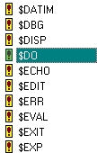
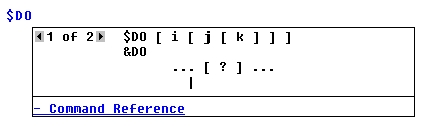

The smartEditor™ is an embedded user assistant in ASAP for
creating more accurate scripts in the ASAP Editor window.
Getting assistance with smartEditor
While you create your script in the Editor window, you can quickly
check the correct spelling of a command or request the command syntax. You
control what goes into the script, while benefiting from pop-up syntax to guide
you.
Using smartEditor
To activate the smartEditor, select
View > Command Tips from the menu, or click the
Command Tips button on the Editor toolbar.
Use smartEditor to:
- Find the correct the name
of an ASAP command.
- View the syntax for a
command.
Finding the correct name of an ASAP command
- To find the correct name
of an ASAP command, type the command name (a few letters or the entire name) in
the Editor window.
-
Open the scrollable list of alphabetical commands bypressing
Ctrl+space. The first name closest to the one you typed in
the Editor is highlighted in the pop-up command list.

- To enter the command in
the Editor window, double-click the selected command, or press any of the
following keys: Enter, Tab, CTRL+Enter. Press Esc to close the list window
without making any changes.
Opening the Command Tip
-
With command tips activated, type a command name in the Editor
window and press the spacebar. For commands with more than one syntax form, the
Command Tip displays a list that gives you a choice of which syntax form to
use. To switch between syntax forms, click the back/forward arrow buttons.

- To view the Help topic for
the command, click
Command Reference at the bottom of the Command Tip window.
Note: once the Help topic opens, the Command Tip window
closes.
- To close the Command Tip
without entering the command name in the Editor window, press
Esc or
Enter.
- To re-open a Command Tip
from anywhere in the window, press
Ctrl-Shift+space.
View the syntax of an ASAP command
- From the Editor window,
type a command and press the spacebar. The Command Tip displays the command
syntax. It also includes a link, named "Command Reference", to the related Help
topic for the command.
- Use the syntax as a visual
guide while typing parameters for the command in the Editor window. As you type
the parameters, the next parameter you need to enter is shown in bold in the
Command Tip window.
- To close the Command Tip,
click anywhere in the Editor window or press
Enter. The tip is intended to be a guide as you enter the
syntax in the Editor. This tip does not automatically enter the syntax in the
Editor window, nor can it be used to copy and paste it.